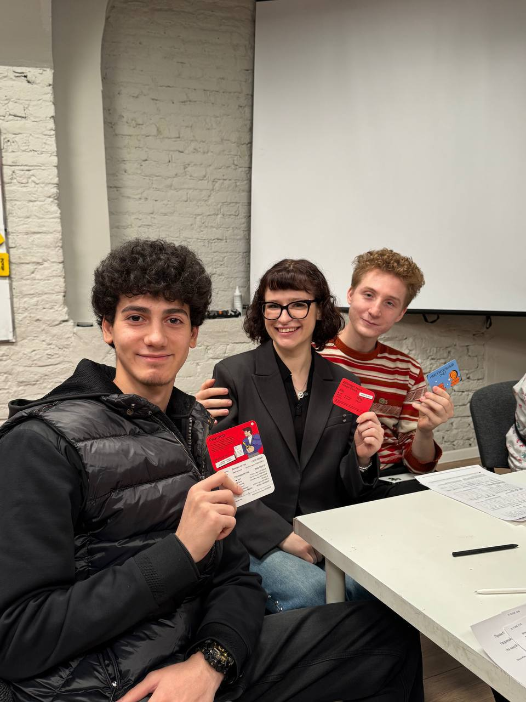

Тот же набор: Python, API, база, очереди, контейнеры. Поэтому в программе нет тем «для галочки» — есть то, без чего сервис не выходит в работу.
python · backendНовый учебный год · 2 курс · 2026/2027
Разработка
программных
модулей
От скрипта, который работает у вас на ноутбуке, — к сервису, который поднимается у любого и не падает от первой ошибки.
218 часов109 занятий≈ 84% практики




Кто будет вести
Заведующий кафедрой разработки
и управления программным обеспечением
МакаровМаксим Николаевич
На парах меня стало чуть меньше. Зато больше меня будет за пределами расписания: мероприятия, мастер-классы и дополнительные лекции по тому, что важно для профессии, но в учебный план не помещается.
мероприятиямастер-классыхакатоны и конкурсыдополнительные лекции
Почему эта дисциплина у меня
Курс собран из того, что реально делают на работе
Мы не разбираем технологии по отдельности. Один сервис растёт от первого запуска до релиза, и на каждом шаге видно, зачем добавили очередной кусок.
один сквозной проектГлавный вопрос на защите — не «что вы подключили», а «что произойдёт, когда это сломается, и что вы будете делать».
устойчивость решения«Обучая других, мы учимся сами.»
Сенека
2 сентября · первая пара
Что меняется
на втором курсе?
Код перестаёт быть только вашим
МДК.01.01 · 218 часов · 109 занятий
Год, когда программу нужно будет запустить у другого человека
На первом курсе задача считалась решённой, когда программа выдала верный ответ у вас. В этом году к этому добавляется всё остальное: она должна подняться из чистой копии, пережить ошибку, объяснить в логах, что случилось, и не сломать тех, кто ей пользуется.
184часа практики
34часа теории
109занятий
Теория занимает 15–25 минут пары, дальше пишем и чиним. Поэтому из 218 часов 184 — практика.
Вопрос 01 · что такое backend
Что происходит между кнопкой
и ответом на экране?
Между ними — примерно 200 миллисекунд вашего кода
Один запрос от начала до конца
Приложение только показывает. Считает — сервис
01 · клиентПриложениеЭкран и кнопка. Отправляет запрос: «покажи мои заказы». Логики здесь нет.
02 · apiВаш сервисПроверяет, кто спрашивает и на что имеет право, решает, что достать. Здесь весь код года.
03 · базаPostgreSQLХранит данные так, чтобы они пережили перезапуск и одновременную запись.
04 · ответJSONВозвращается в оговорённом формате. Поменяли формат, не предупредив, — сломали чужое приложение.
нажали кнопку≈ 200 миллисекундувидели список
Отказать может каждый из четырёх шагов: не тот токен, недоступная база, кривые данные, слишком долгий ответ. Половина курса — про то, что делать в этих случаях.
Термин 1 · API
Список адресов, по которым к сервису обращаются программы
У человека для сервиса есть экран. У программы — адреса. Для каждого заранее известно, каким способом к нему обращаться, что отправить и что придёт в ответ.
способадресчто делаетчто вернёт
GET
/ordersотдать заказы того, кто спрашивает
список объектовPOST
/ordersсоздать заказ из присланных данных
созданный заказ · 201GET
/orders/42отдать один заказ по номеру
объект или 404Три цифры в ответе говорят больше, чем текст: 200 — всё хорошо, 404 — такого нет, 401 — не представился, 403 — представился, но нельзя, 500 — сервис сломался. Их мы разберём отдельно.
Термин 2 · JSON
То же самое, что на экране, только для программы
ЗАКАЗПРИЛОЖЕНИЕ
- Номер
- 42
- Статус
- в доставке
- Сумма
- 1 890 ₽
- Позиций
- 3
GET /orders/42200 OK
{
"id": 42,
"status": "delivering",
"total": 1890,
"items_count": 3
}
JSON — это текст с парами «имя: значение». Приложение получает его и раскладывает по своим экранам: где-то это надпись, где-то цвет плашки. Сервис не знает, как это нарисуют, — он отвечает за данные и их формат.
Термин 3 · бизнес-логика
Правила предметной области, а не кнопки и не таблицы
Уровень APIчто пришло и что ответить
Разобрать запрос, проверить формат данных, вернуть результат и понятный код ответа. Здесь нет решений «можно или нельзя» — только приём и передача.
Бизнес-логикаправила продукта
Здесь живут все «если» вашего продукта:
- заказ можно отменить, пока он не уехал со склада;
- скидка не складывается с промокодом;
- вернуть деньги можно в течение четырнадцати дней.
Уровень хранениякак это лежит
Достать и записать. База не знает, почему отмена запрещена, — она просто хранит строку со статусом.
Если правило написать в приложении, оно будет работать только там: сайт и мобильное приложение начнут вести себя по-разному, а через месяц никто не вспомнит, какое поведение правильное. Поэтому правила живут в сервисе, посередине.
Термин 4 · база данных
Таблицы, строки и связи между ними
users
| id | role | |
|---|---|---|
| 7 | lera@mail.ru | user |
| 8 | ivan@mail.ru | admin |
orders
| id | user_id | status |
|---|---|---|
| 42 | 7 | delivering |
| 43 | 8 | new |
Заказ не хранит почту покупателя — он хранит его номер, и подсвеченные ячейки это показывают: заказ 42 принадлежит пользователю 7. Почта поменялась в одном месте — и все его заказы знают новую. А главное отличие от файла или переменной: содержимое базы переживает перезапуск сервиса и его падение.
Вопрос 02 · воспроизводимость
Почему «у меня работает»
не считается результатом?
Проверка — запуск на чужом компьютере
Один и тот же код на двух машинах
Работает не программа, а программа вместе с окружением
«Скачай и запусти» — не запускается. Другая версия Python, не установлена библиотека, нет базы, забыт файл с настройками, путь захардкожен под чужой компьютер.
запуск не воспроизводитсяКлонировал, выполнил одну команду — сервис поднялся вместе с базой и очередью. Версии зафиксированы, настройки берутся из окружения, тестовые данные заливаются скриптом.
clean clone · одна командаПоэтому на защите я разворачиваю ваш сервис из чистого клона, а не смотрю на ваш ноутбук. К этому же приводит вся связка Docker Compose, зафиксированных зависимостей и README, которую мы соберём.
Вопрос 03 · итог года
Что мы соберём
за этот год?
Один сервис, который растёт от занятия к занятию
Backend baseline release v1.0
Пять частей, которые работают вместе
Точка входа: принимает запросы, проверяет данные на границе, отдаёт единый формат ошибок и сам публикует документацию контракта.
fastapi · pydantic · openapiХранение через SQLAlchemy: модели, транзакции, миграции Alembic и восстановление, когда миграция прошла неудачно.
postgresql · sqlalchemy · alembicПароль хранится безопасно, выдаются access и refresh токены, у пользователя есть роль, часть endpoint закрыта.
jwt · rbacКэш с временем жизни и одна задача в очереди: с повторами, без двойного выполнения и с понятным статусом.
redis · celeryВесь стенд поднимается одной командой, а на каждый Pull Request автоматически гоняются проверки.
compose · github actionsСтруктурированные логи со сквозным идентификатором запроса плюс адреса, по которым видно, жив сервис или нет.
logs · health · readinessЭто и есть итог дисциплины. Каждый раздел добавляет к сервису один кусок — и он не выбрасывается, а остаётся в проекте до защиты.
Вопрос 04 · формат работы
Почему один проект,
а не двенадцать маленьких?
Технология без контекста забывается за неделю
Сквозной сервис вместо набора несвязанных лабораторных
Каждая новая тема добавляется в тот же проект — и сразу видно, что она чинит и что ломает.
Отдельная папка на каждую технологию: тут FastAPI, там Redis, рядом Docker. Всё по отдельности работает, вместе — никогда не собиралось. К защите вспомнить нечего.
нет связей между темамиНовая тема ложится в тот же код: добавили базу — переписали хранение, добавили очередь — вынесли долгую операцию. Каждый шаг виден в истории репозитория.
вертикальные срезыВертикальный срез — это функция целиком: от запроса и проверки данных до записи в базу и ответа. Их за год будет несколько, и каждый доводится до конца, а не остаётся половиной.
Вопрос 05 · контракт
Что такое замороженный контракт
и почему его нельзя ломать?
От вашего API зависят три другие дисциплины
Один продукт · четыре команды
Договорились о формате — и работаем параллельно
Выпишете сервис, который отдаёт данные
Заглушкаотвечает вместо сервиса, пока он не готов
договорённость
Контракт
Какие есть адреса, что им отправляют и что они возвращают
GET /orders/42 → { "id", "status", "total" }
Androidрисует экран заказа по этим полям
Desktop на WPFпоказывает те же данные в своём интерфейсе
Тестировщикипишут проверки, не дожидаясь сервиса
Описание появляется на второй паре, до того как написан код. Дальше все четверо работают одновременно: остальные обращаются к заглушке, отвечающей по тому же описанию, а когда ваш сервис готов — его подключают вместо неё, и переписывать никому ничего не нужно.
Что значит «сломать контракт»
Одно переименованное поле — и приложение показывает пустоту
БЫЛО · по контракту200 OK
{
"id": 42,
"status": "delivering",
"total": 1890
}
СТАЛО · «просто переименовал»200 OK
{
"id": 42,
"status": "delivering",
"amount": 1890
}
Сервис отвечает успешно, ошибок в логах нет. Но приложение ищет поле total, не находит его — и в строке «Сумма» у пользователя пусто. Разбираться будут Android-разработчик и тестировщик, потому что у них «вдруг сломалось», а у вас всё зелёное.
То же ломающее изменение: убрать адрес, поменять тип с числа на строку, сделать необязательное поле обязательным.
Как менять контракт и никого не сломать
Добавлять можно, отнимать — по договорённости
Новое поле появляется вместе со старым. У тех, кто про него не знает, ничего не меняется — они читают прежнее.
совместимое изменениеСообщаете, что старое поле уйдёт, договариваетесь о сроке. Обе версии живут вместе, пока все не перешли.
переходный периодКогда все перешли — старое поле удаляется. Если убрать раньше, адрес выпускают под новой версией: старая продолжает работать.
версионированиеЭто и есть «замороженный контракт»: не «нельзя трогать никогда», а «нельзя менять внезапно». Совместимости в курсе посвящено отдельное занятие, а на пятом спринте вы будете сводить свой сервис с приложениями однокурсников — там всё это проверяется на практике.
Вопрос 06 · 90 минут
Как проходит
занятие?
Объяснение короткое, дальше руки
Ритм пары · 184 часа практики из 218
Новый механизм, живой показ на маленьком примере и разбор, где он ломается. На проектных парах эта часть сокращается до 5–10 минут.
Как удобнее по задаче: сами, в паре, небольшой группой или вместе со мной на общем экране. Каждый доводит кусок до своего сервиса, с тестами и проверкой на своих данных.
Специально ломаем сценарий, смотрим, что покажут логи, чиним и отправляем Pull Request на review.
Issue→branch→commit→Pull Request→review→merge
Каждая пара заканчивается чем-то проверяемым: кодом, тестом, миграцией, логом, схемой, отчётом об инциденте или заметкой к релизу. Не «послушали про Docker», а «стенд поднимается».
Вопрос 07 · приёмка работы
Когда задание считается
сделанным?
«У меня работает» — это только первый пункт из восьми
Речь про обычное задание на паре
Работает — это ещё не «сдано»
задание одной пары
Добавить отмену заказа
Пользователь может отменить свой заказ, пока тот не уехал со склада.
POST /orders/42/cancel
Этот же порядок действует и на спринте, и на экзамене. Разница только в объёме: там сценариев больше, а шаги те же.
01Работает основной сценарийНовый заказ отменяется, статус меняется, сервис отвечает «готово».
02Ломаем специальноПробуем отменить чужой заказ и тот, что уже уехал. Сервис должен отказать, а не сделать.
03ДоказательстваНа каждый случай — тест, который его проверяет. В логах видно, какой запрос отклонён и почему.
04Минимальная правкаНашли дефект — чиним одним небольшим изменением, а не переписываем весь файл.
05Повторная проверкаПрогоняем все тесты, включая старые: правка не должна сломать то, что работало вчера.
06Pull Request и reviewОписали, что сделали. Однокурсник прочитал, замечания исправлены отдельным коммитом.
07Запуск из чистого клонаНа другом компьютере после клонирования сервис поднимается, и отмена работает.
08ОбъяснениеУстно: где у решения границы и что будет, если заказов станет в сто раз больше.
Вопрос 08 · маршрут курса
Из чего состоит
дисциплина?
Двенадцать разделов, 109 занятий
218 часов · на карточке номера занятий
Первые десять разделов собирают сервис, одиннадцатый — доводят его до релиза, двенадцатый показывает, что происходит с такими сервисами в реальной эксплуатации.
Вопрос 09 · глубина
Что обязательно,
а что для расширения?
Группу не делим — делим глубину
Три уровня внутри одной программы
Все 109 пар проходят все. Отличается не состав, а требуемая глубина.
Как распределены 218 часов
baseline146 ч · 67% — обязательный сервис
проект52 ч · 24% — спринты, резерв, стабилизация
расширение20 ч · 9% — общие production-лаборатории
FastAPI, база, вход и права, Redis, фоновая задача, Docker и CI.
146 часовПять спринтов, взаимные review, bug bash, восстановление и передача проекта.
52 часаПлатежи, RabbitMQ, метрики, устойчивость внешнего API, пакетная обработка.
20 часовВопрос 10 · проектная часть
Что происходит
в пяти спринтах?
Занятия 74–99 · четверть всего курса
Каждый спринт — четыре пары
Планирование → реализация → проверки и Pull Request → демонстрация и разбор
- 74–77Спринт 1 · основная пользовательская функция целиком
- 78–81Спринт 2 · хранение данных, миграция и работа с реальными данными
- 82–85Спринт 3 · защищённая функция, негативные сценарии и заморозка контракта
- 86–89Спринт 4 · кэш или фоновая задача плюс разбор учебной аварии
- 90–93Спринт 5 · стыковка с Android, WPF и тестировщиками
- 94–99Резерв · bug bash, восстановление, узкое место, security review, передача проекта
Резерв — не «свободные пары». Это шесть занятий, на которых чинится то, что всплыло за год: у одних миграции, у других логи, у третьих сборка.
Вопрос 11 · проверка данных
Зачем нужны
FastAPI и Pydantic?
Чужие данные нельзя считать правильными
Проверка на границе сервиса
Клиент может прислать что угодно: пустую строку вместо числа, отрицательный возраст, лишние поля, вообще не тот формат.
Кривое значение проходит внутрь, ломается где-то в глубине, пользователь получает пятисотую ошибку без объяснений, а в базе остаётся мусор, который потом никто не разберёт.
500 · битые данныеОписали, какие поля и каких типов ожидаете. Всё несовпадающее отсекается на входе с понятным ответом: какое поле и что с ним не так. Документация к API при этом рождается сама.
422 · понятная ошибкаЗаодно решается вечная проблема «а какие вообще есть адреса и что они принимают»: описание контракта формируется из того же кода, а не пишется отдельно и не устаревает.
Вопрос 12 · данные
Зачем база данных
и миграции?
Данные живут дольше, чем ваш процесс
PostgreSQL, SQLAlchemy и Alembic
База умеет то, чего файл не умеет: искать по индексу, держать связи между сущностями и не портиться, когда два запроса пишут одновременно.
postgresqlРаботаем с объектами, а не собираем SQL строками. Заодно исчезает целый класс дыр в безопасности, а транзакция становится явной.
sqlalchemyСхема меняется всю жизнь проекта. Alembic хранит историю изменений: любую можно применить на чужой копии данных и откатить, если стало хуже.
alembicОтдельная тема — что делать, когда миграция уже прошла и испортила данные. На неё в курсе выделено занятие, потому что в жизни это случается чаще, чем хотелось бы.
Вопрос 13 · доступ
Зачем вход в систему
и роли?
Один пользователь не должен видеть чужое
Пароль, токены, роли и негативные сценарии
Никогда не хранится как есть. Берём готовую проверенную библиотеку — свою криптографию писать не будем, это отдельная профессия.
argon2 / bcryptПосле входа выдаётся короткоживущий access и длинный refresh. Первый ходит в каждом запросе, второй позволяет продлить сессию, не спрашивая пароль снова.
jwt · access / refreshОбычный пользователь видит своё, администратор — больше. Проверяем оба отказа: 401 — не представился, 403 — представился, но не имеет права.
rbac · 401 / 403На занятии с негативными сценариями мы будем специально ходить чужим токеном, просроченным токеном и вообще без него — и смотреть, что ответит сервис.
Вопрос 14 · Redis
Зачем нужен
Redis?
И что будет, когда он выключится
Быстрое хранилище рядом с сервисом
Redis держит данные в памяти и отдаёт их за доли миллисекунды, но живёт отдельно от вашего процесса и может упасть.
Тяжёлый ответ, который редко меняется, считаем один раз и кладём с временем жизни. Следующие запросы получают готовое.
cache-aside · ttlОдноразовый код подтверждения, счётчик попыток, короткая блокировка — то, что не жалко потерять и не нужно хранить вечно.
код с ttlСервис обязан продолжить работать: медленнее, без кэша, но отвечать. Падение всего продукта из-за кэша — ошибка проектирования, и мы её разберём на инциденте.
degraded modeВопрос 15 · фоновые задачи
Зачем выносить работу
в фоновую задачу?
Пользователь не должен ждать минуту
Очередь, повторы и статус
Отчёт формируется тридцать секунд — всё это время браузер ждёт. Обрыв связи, и работа потеряна. Второе нажатие запускает всё заново.
таймаут · потеря работыЗапрос кладёт задание в очередь и сразу отвечает: «принято, вот идентификатор». Отдельный процесс делает работу, а клиент спрашивает статус, когда захочет.
celery · статус задачиЗадача упала из-за временной ошибки — повторяем с задержкой, а не теряем.
retry · backoffПовтор не должен списать деньги дважды. Задача пишется так, чтобы повторный запуск ничего не ломал.
идемпотентностьОтдельное занятие: убиваем worker посреди работы и смотрим, что стало с задачей и как её вернуть.
worker-инцидентВопрос 16 · сборка и проверки
Зачем Docker
и автоматические проверки?
Чтобы «скачай и запусти» действительно работало
Одна команда поднимает весь стенд
API, база, Redis и worker описаны одним файлом и стартуют вместе. Не нужно вручную ставить PostgreSQL и объяснять, какой порт куда.
один стендСервис сам сообщает, жив он и готов ли принимать запросы. Без этого «не работает» превращается в гадание.
проверка состоянияНа каждый Pull Request автоматически гоняются линтер, проверка типов и тесты. Не прошло — не вливаем, и это не обсуждается.
github actionsИменно эта связка делает возможной защиту из чистого клона: я беру ваш репозиторий на своей машине и запускаю одной командой.
Вопрос 17 · диагностика
Как понять, почему
сервис ответил ошибкой?
Не гадать, а посмотреть
Структурированные логи и сквозной идентификатор
Каждому запросу присваивается идентификатор, он проходит через все слои и попадает в каждую запись лога.
В консоли print с текстом «ошибка», без времени, пользователя и запроса. Когда падает у одного из тысячи — найти невозможно.
print · ничего не найтиЗапись с временем, идентификатором запроса, пользователем и причиной. По одному идентификатору поднимается вся история: что пришло, что решили, где упало.
correlation idПравило безопасности: в логи никогда не попадают пароли, токены и ключи. Разбирать инцидент нужно так, чтобы сам лог не стал новой дырой.
Вопрос 18 · учебные аварии
Что такое
контролируемый инцидент?
Ломаем специально, в подготовленной лаборатории
Отказ по расписанию
Раз в несколько занятий сценарий ломается намеренно. Задача — не «чтобы не сломалось», а найти причину, починить минимальной правкой и доказать, что починили.
Кэш недоступен. Отвечает ли сервис дальше, насколько медленнее и что видно в логах.
деградацияЗадача оборвалась на середине. Что с её статусом и не выполнится ли она дважды.
восстановлениеСхема применилась, часть данных потеряна. Откат, восстановление и тест на будущее.
rollback · recoveryСломанный на паре сервис в минус не идёт — это часть задания. В минус идёт другое: не суметь повторить поломку и не понять, из-за чего она случилась.
Вопрос 19 · общие лаборатории
Что показывают
production-практикумы?
Занятия 100–109 · всей группой
Пять тем, которые обычно видят только на работе
По одной-две пары на подготовленном стенде. Задача — не «освоить», а понимать назначение и границы: где это нужно, чего стоит и что читать дальше.
Сценарий оплаты, подписанный webhook и дубли. Настоящие карты не участвуют.
занятия 100–101Обмен сообщениями между сервисами: очередь, маршрутизация, восстановление worker.
занятия 102–103Prometheus собирает показатели, Grafana рисует. Ищем инцидент по графику.
занятия 104–105Внешний сервис тормозит или падает: таймауты, повторы, предохранитель.
занятия 106–107Большой файл, прогресс и продолжение после сбоя вместо «повисло».
занятие 108Последняя пара: сборка всего вместе и защита релиза.
занятие 109Вопрос 20 · оценивание
Как складывается
оценка?
Считается работающий сервис, а не список технологий
Сто баллов · порог 60
- 90–100«5» · сервис устойчив, расширения разобраны, границы объяснены
- 75–89«4» · основные функции и инфраструктура работают, есть отдельные недочёты
- 60–74«3» · API, база, вход и стенд собраны, но есть пробелы в git-flow, Docker или очередях
- 0–59«2» · сервис не разворачивается или не работает основной сценарий
Важная строчка из программы: знакомство с дополнительными технологиями не компенсирует неработающий основной сервис. Пять недоделанных подсистем стоят меньше, чем один надёжный сервис.
Вопрос 21 · защита
Что нужно показать
на защите?
Занятие 109 · индивидуально
Семь обязательных пунктов
- 01Развернуть сервис из чистого клона
- 02Показать работу API, базы, входа, кэша и фоновой задачи
- 03Провести платёж в песочнице и обработать повторный webhook
- 04Объяснить устройство очереди и восстановление worker
- 05Найти учебный инцидент по метрикам и логам
- 06Показать таймауты, повторы и пакетную обработку файла
- 07Объяснить, что в вашем сервисе базовый уровень, а что требует углубления
Седьмой пункт — самый весомый. Признать «здесь у меня упрощение, в реальном проекте так нельзя, потому что…» — сильный ответ, а не слабый.
Вопрос 22 · инструменты
Как мы работаем
с нейросетями?
Учимся пользоваться ими и обходиться без них
ИИ на дисциплине
Инструмент, которым учимся пользоваться грамотно
Разобрать незнакомую ошибку, объяснить чужой код, предложить тесты, причесать документацию и README, сравнить два подхода. Условие одно: вы понимаете и проверяете то, что вставляете, — на review я спрошу, почему сделано именно так.
Сгенерировать сервис целиком и принести на защиту. Там нужно развернуть его из чистого клона, сломать по моей просьбе и объяснить, что произойдёт при росте нагрузки. Непонятый код разваливается на первом же вопросе.
То же правило про чужой код из интернета: копировать можно, не понимая — нельзя. В Pull Request достаточно одной строки: откуда взято и что изменено.
Вопрос 23 · итог
С каким результатом
заканчивается год?
Не с зачёткой, а с работающим сервисом
В конце дисциплины
Сервис, который
запускается у любого
5 спринтов1 общий продукт109 занятий
Репозиторий разворачивается одной командой вместе с базой, кэшем и очередью, переживает отключение зависимостей и объясняет свои ошибки в логах. С таким проектом можно идти на стажировку — он ближе к рабочему, чем что-либо, что вы писали раньше.
И понимание, чего в нём ещё нет: это тоже часть результата.

Словарь · часть 1 из 2
Слова, которые сегодня прозвучали
BackendЧасть системы, которая живёт на сервере: принимает запросы, считает, ходит в базу и возвращает ответ. Пользователь её не видит.
APIНабор адресов, по которым к сервису обращаются программы. Для каждого известно, что он принимает и что вернёт.
КонтрактОписание API, на которое опираются другие команды. Замороженный — значит, меняется только по согласованию.
Вертикальный срезФункция целиком: от запроса и проверки данных до записи в базу и ответа клиенту.
МиграцияШаг изменения схемы базы, записанный в код. Его можно применить на чужой копии данных и откатить.
ТранзакцияГруппа изменений, которая либо применяется целиком, либо не применяется вовсе.
ИдемпотентностьСвойство операции, при котором повторный запуск не меняет результат: повтор не спишет деньги дважды.
Словарь · часть 2 из 2
И слова про эксплуатацию
КэшКопия дорогого результата, которую отдают вместо повторного вычисления. Живёт ограниченное время.
TTLВремя жизни записи в кэше, после которого она исчезает сама.
Degraded modeРежим, в котором сервис продолжает отвечать, потеряв часть возможностей: медленнее, но работает.
Health / readinessАдреса, по которым сервис сообщает, жив он и готов ли принимать запросы.
Correlation IDИдентификатор запроса, который проходит через все слои и попадает в каждую запись лога.
WebhookЗапрос, который внешний сервис присылает вам сам, когда у него что-то произошло.
Clean cloneПроверка: клонировать репозиторий в пустую папку и запустить, ничего не донастраивая руками.
Домашнее задание № 1 · к следующему занятию
Максим Николаевич не хочет задавать домашнее задание. Но очень хочет
Возьмите приложение, которым пользуетесь каждый день. Опишите три действия в нём и для каждого предположите: что уходит на сервер, что тот проверяет, куда это сохраняется и что возвращается обратно.
три действияВыберите одно из трёх действий и подумайте, что сломается, если пропадёт сеть на середине, нажать кнопку дважды или отправить пустое поле. Как приложение ведёт себя на самом деле?
что пойдёт не такПроверьте, что у вас есть Python 3.12, git и работающий редактор. Что не встало — запишите: с чем именно не получилось и на каком шаге.
python · gitКода писать не нужно. Задание на полстраницы — про то, чтобы начать видеть за экраном приложения запрос, проверку и ответ.
Домашнее задание № 1 · порядок сдачи
Куда положить и как сдать
Файл
Один файл
homework_01.md в личном репозитории курса, в папке lesson_01/. В первой строке — имя и группа.Ветка и PR
Ветка
hw-01, коммит с понятным сообщением, затем Pull Request в свою main с коротким описанием.Срок
До начала следующего занятия. Репозиторий заводим на первой паре, ссылку на шаблон я дам.
Проверяю
Три разных действия, а не три экрана одного и того же. И честный список того, что не установилось, — он мне нужнее, чем «всё ок».
Про ИИ: сначала думаете сами, дальше можно попросить модель причесать формулировки и оформить в .md. Я сам так делаю всегда, поэтому и вам запрещать не буду. Важно, чтобы наблюдения были ваши.